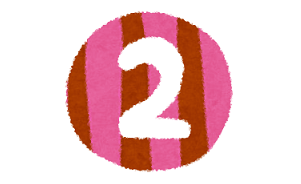

このサイトについて
「アニメーションによる統計学習」の成長記録
これまでの開発の道のりを記しています。逐一記録をとってきたわけではなく、うろ覚えで書いている部分もあります。ご容赦ください。

確率変数ぷるぷる君をつくろう：アニメーション作成のきっかけは、日本心理学会主催の数学ワークショップ、アニメーション作成最初の一歩はGIFアニメーションでした。このときは、これで終わるつもりでいたのです。

p5.jsによる試作 1：p5.jsとの出会いが、アニメーションの進歩のきっかけでした。正規分布にしたがう乱数を発生させ、それをキャンバスにプロットし、ヒストグラムを描くという一連のアニメーションの基本形ができました。
数値シミュレーションの世界：「数値シミュレーションで読み解く統計のしくみ」という本と出会ったことが、このサイトの方向を示してくれたように思いました。乱数によるシミュレーションについての考えを整理したい、そして、この本で提示されているシミュレーションを、私なりの方法で可視化したいと思います。